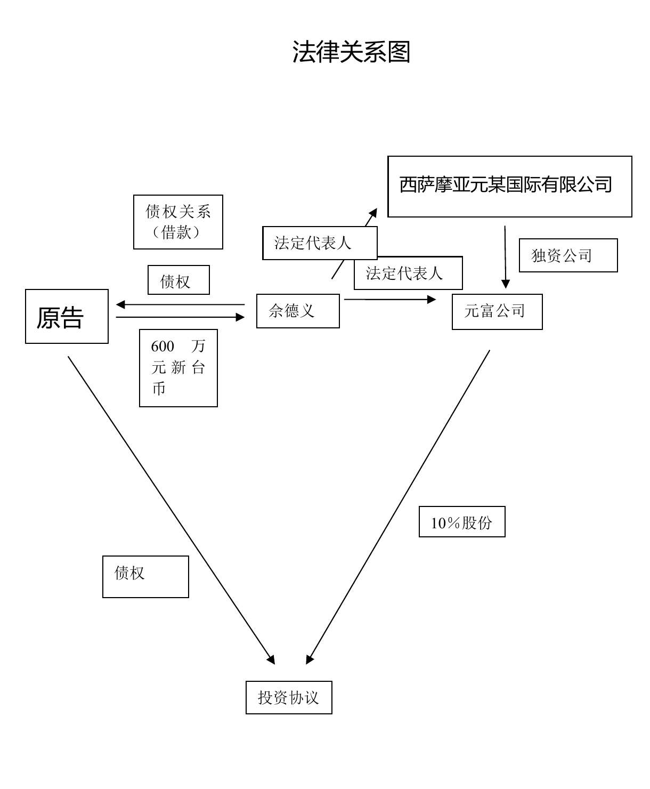

第一次作业蔡某合同诉讼案参考答案
本院认为
一、关于法律适用
蔡某某、佘某某系台湾居民，各方之间产生的返还投资款纠纷为涉台商事纠纷。元某公司的住所地在本院辖区内，依据《中华人民共和国民事诉讼法》第二十四条的规定，本院对本案具有管辖权。各方当事人在庭审中约定适用大陆法律，故大陆法律为处理本案争议的准据法。
二、蔡某某与佘某某之间是否存在借款关系
蔡某某为证实其曾向佘某某借款66573500元新台币，提供经台湾公证部门公证的蔡某某出具的10份声明书及所附银行单据，但在公证书中，公证员在蔡某某出具的声明书背面加盖“本文件之签名或盖章，在台湾台中地方法院公证处认证”文字，单从公证书上记载的内容无法确定公证部门是否到银行核对过银行单据的真实性，从公证书内容看公证部门只是对佘某某在声明书上的签字和盖章的真实性予以公证，以上述证据无法证实原告主张佘某某曾向其借款66573500元新台币这一事实。但是从郎颖与佘某某谈话录音可知，佘某某认可蔡某某借给其600万元新台币，双方曾约定将此借款投入元某公司，占股份10％。在两被告未提供反驳证据的情况下，结合公证书及谈话录音，可以认定蔡某某主张“《投资契约》中约定蔡某某投入的600万新台币是由佘某某借蔡某某款转化而来”这一事实属实。虽然蔡某某未提供证据证明蔡某某与佘某某存在书面或口头的借款协议，但根据谈话录音可认定佘某某借原告600万元新台币这一事实。
三、佘某某应承担的责任
根据蔡某某与元某公司签订的《投资契约》，元某公司应承担给付蔡某某10％股权的义务，蔡某某应承担交付元某公司600万元新台币出资款的义务。合同签订后，元某公司并未履行交付蔡某某10％股权的相关手续和义务; 蔡某某也未直接向元某公司交付600万元新台币，也无证据证明佘某某代蔡某某向元某公司交付600万元新台币。双方均未履行合同，致使双方的合同目的无法实现，根据《中华人民共和国合同法》第九十四条（四）项的规定，蔡某某可以解除合同。蔡某某在2011年6月29日的庭审中要求解除与元某公司之间的投资协议，符合法律规定，根据《中华人民共和国合同法》第九十六条的规定，双方之间的投资协议于2011年6月29日解除，本院予以确认。
投资协议解除后，蔡某某与佘某某的借款关系仍然存在。从各方在庭审中已提供的证据看，蔡某某与佘某某对借款期限没有约定，根据《中华人民共和国合同法》二百零六条的规定，蔡某某可以随时要求佘某某返还，故佘某某应返还蔡某某600万元新台币借款。蔡某某要求被告承担从确定投资款之日至返还投资款之日的利息，由于在谈话录音中，佘某某陈述过给付蔡某某利息的事实，应认定双方对利息有约定。但利息如何计算，双方没有约定，根据《中华人民共和国合同法》第二百一十一条规定，自然人之间的借款合同对支付利息没有约定或者约定不明确的，视为不支付利息。因此，对于蔡某某主张的在确定投资款至双方合同解除阶段的利息，本院不予支持。根据《中华人民共和国合同法》第二百零七条的规定，佘某某在投资协议解除后未向蔡某某返还借款，应从投资协议的解除之日起承担支付逾期利息的责任。
四、元某公司应承担的责任
蔡某某要求元某公司承担责任的理由如下：1、投资协议表明，元某公司加入到蔡某某与佘某某的600万元新台币的借款关系中。属于债务加入，元某公司成为共同债务人。2、佘某某是元某公司、元某公司投资方西萨摩亚公司的法定代表人，元某公司的董事会由佘某某及其夫人、儿子组成，说明佘某某完全控制了元某公司、法人人格与佘某某个人混同，应否认元某公司的法人人格，元某公司与佘某某对彼此债务承担连带责任。3、佘某某在向蔡某某借款时，虽然是以自己的名义向蔡某某借款，但蔡某某在借款时知道该借款实际使用人为元某公司，加之后来两被告与蔡某某之间签订了投资协议，两被告、蔡某某对于元某公司作为实际借款人是认可的。佘某某借款行为属于间接代理行为，实际借款人是元某公司。
本院认为，1、债务加入是指第三人承诺或与债权人协议，第三人与债务人共同对债务承担清偿责任。要认定构成债务加入，必须有第三人明确承诺或与债权人达成协议，承诺第三人与债务人共同对本案债务承担清偿责任。而本案的投资协议是蔡某某与元某公司签订，约定元某公司给付蔡某某10％的股份。从该协议的内容，不能得出元某公司承诺与佘某某共同承担清偿佘某某对蔡某某所负债务的意思表示，对蔡某某的该理由，本院不予支持。2、本案是否能以佘某某实际控制公司，而否定元某公司的法人人格？否认法人人格，一般是在公司不能承担自己的债务时，通过否认公司的法人人格，让其股东对公司的债务承担无限连带责任。本案的债务人是佘某某，蔡某某要求否定元某公司的法人人格目的显然是想通过否认元某公司的法人人格，让元某公司的财产等同于佘某某个人财产，进而以元某公司的财产偿还佘某某对蔡某某的债务。《中华人民共和国公司法》第二百一十七条（三）项规定了实际控制人的定义，实际控制人，是指虽不是公司的股东，但通过投资关系、协议或者其他安排，能够实际支配公司行为的人。但法律并没有规定由于某人是公司的实际控制人，公司就应对该人的个人债务承担责任或否认公司的法人人格。蔡某某该主张，没有法律依据，本院不予支持。3、对于蔡某某主张的间接代理问题，蔡某某并无证据证明元某公司授权佘某某向蔡某某借款，且起诉时即主张将佘某某借款中的600万新台币投资到元某公司取得元某公司10％的股权，说明借款人就是佘某某。而且即使佘某某借蔡某某的款在元某公司成立时确实投入到元某公司，该款也是以西萨摩亚公司投资款的名义投入元某公司，元某公司接受的是西萨摩亚有限公司投资人的投资款，而不是蔡某某给元某公司的借款。因此，蔡某某以元某公司是实际借款人要求元某公司返还借款，该理由本院不予支持。综上所述，蔡某某要求元某公司承担返还投资款的责任，本院不予支持。
裁判结果
综上，依据《中华人民共和国合同法》第九十四条（四）项、九十六条、二百零六条、二百零七条、二百一十一条、《中华人民共和国公司法》第二百一十七条（三）项的规定，判决如下：
一、被告佘某某于本判决生效后十日内返还原告蔡某某借款600万元新台币，并按人民银行逾期贷款利率向原告蔡某某支付利息（计算期限自2011年6月29日至判决给付之日止）。
二、驳回原告蔡某某对被告佘某某的其它诉讼请求。
三、驳回原告蔡某某对被告烟台元某新型建筑材料有限公司的诉讼请求。
如果未按本判决指定的期间履行给付金钱义务，应当依照《中华人民共和国民事诉讼法》第二百二十九条之规定，加倍支付迟延履行期间的债务利息。
案件受理费29157元，由被告佘某某承担。
案件分析图

相关法律规定
1、合同法
第三十二条当事人采用合同书形式订立合同的，自双方当事人签字或者盖章时合同成立。
第七十九条债权人可以将合同的权利全部或者部分转让给第三人，但有下列情形之一的除外：
（一）根据合同性质不得转让；
（二）按照当事人约定不得转让；
（三）依照法律规定不得转让。
第八十条债权人转让权利的，应当通知债务人。未经通知，该转让对债务人不发生效力。
债权人转让权利的通知不得撤销，但经受让人同意的除外。
第八十一条债权人转让权利的，受让人取得与债权有关的从权利，但该从权利专属于债权人自身的除外。
第八十二条债务人接到债权转让通知后，债务人对让与人的抗辩，可以向受让人主张。
第八十三条债务人接到债权转让通知时，债务人对让与人享有债权，并且债务人的债权先于转让的债权到期或者同时到期的，债务人可以向受让人主张抵销。
第八十四条债务人将合同的义务全部或者部分转移给第三人的，应当经债权人同意。
第八十五条债务人转移义务的，新债务人可以主张原债务人对债权人的抗辩。
第八十六条债务人转移义务的，新债务人应当承担与主债务有关的从债务，但该从债务专属于原债务人自身的除外。
第八十七条法律、行政法规规定转让权利或者转移义务应当办理批准、登记等手续的，依照其规定。
第九十四条有下列情形之一的，当事人可以解除合同：
（一）因不可抗力致使不能实现合同目的；
（二）在履行期限届满之前，当事人一方明确表示或者以自己的行为表明不履行主要债务；
（三）当事人一方迟延履行主要债务，经催告后在合理期限内仍未履行；
（四）当事人一方迟延履行债务或者有其他违约行为致使不能实现合同目的；
（五）法律规定的其他情形。
第九十五条法律规定或者当事人约定解除权行使期限，期限届满当事人不行使的，该权利消灭。
法律没有规定或者当事人没有约定解除权行使期限，经对方催告后在合理期限内不行使的，该权利消灭。
第九十六条当事人一方依照本法第九十三条第二款、第九十四条的规定主张解除合同的，应当通知对方。合同自通知到达对方时解除。对方有异议的，可以请求人民法院或者仲裁机构确认解除合同的效力。
法律、行政法规规定解除合同应当办理批准、登记等手续的，依照其规定。
第九十七条合同解除后，尚未履行的，终止履行；已经履行的，根据履行情况和合同性质，当事人可以要求恢复原状、采取其他补救措施，并有权要求赔偿损失。
第二百零五条借款人应当按照约定的期限支付利息。对支付利息的期限没有约定或者约定不明确，依照本法第六十一条的规定仍不能确定，借款期间不满一年的，应当在返还借款时一并支付；借款期间一年以上的，应当在每届满一年时支付，剩余期间不满一年的，应当在返还借款时一并支付。
第二百零六条借款人应当按照约定的期限返还借款。对借款期限没有约定或者约定不明确，依照本法第六十一条的规定仍不能确定的，借款人可以随时返还；贷款人可以催告借款人在合理期限内返还。
第二百零七条借款人未按照约定的期限返还借款的，应当按照约定或者国家有关规定支付逾期利息。
第二百一十条自然人之间的借款合同，自贷款人提供借款时生效。
第二百一十一条自然人之间的借款合同对支付利息没有约定或者约定不明确的，视为不支付利息。
自然人之间的借款合同约定支付利息的，借款的利率不得违反国家有关限制借款利率的规定。
2、合同法司法解释三
第二条当事人未以书面形式或者口头形式订立合同，但从双方从事的民事行为能够推定双方有订立合同意愿的，人民法院可以认定是以合同法第十条第一款中的“其他形式”订立的合同。但法律另有规定的除外。
3、证据规则
第七十条一方当事人提出的下列证据，对方当事人提出异议但没有足以反驳的相反证据的，人民法院应当确认其证明力：
（一）书证原件或者与书证原件核对无误的复印件、照片、副本、节录本；
（二）物证原物或者与物证原物核对无误的复制件、照片、录像资料等；
（三）有其他证据佐证并以合法手段取得的、无疑点的视听资料或者与视听资料核对无误的复制件；
（四）一方当事人申请人民法院依照法定程序制作的对物证或者现场的勘验笔录。
4、公司法
第四十四条 股东会的议事方式和表决程序，除本法有规定的外，由公司章程规定。 股东会会议作出修改公司章程、增加或者减少注册资本的决议，以及公司合并、分立、解散或者变更公司形式的决议，必须经代表三分之二以上表决权的股东通过。
第六十二条 一人有限责任公司不设股东会。股东作出本法第三十八条第一款所列决定时，应当采用书面形式，并由股东签名后置备于公司。
最高人民法院关于审理外商投资企业纠纷案件若干问题的规定（一）
第五条 外商投资企业股权转让合同成立后，转让方和外商投资企业不履行报批义务，经受让方催告后在合理的期限内仍未履行，受让方请求解除合同并由转让方返还其已支付的转让款、赔偿因未履行报批义务而造成的实际损失的，人民法院应予支持。